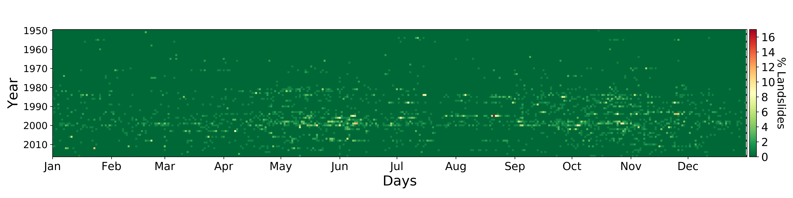
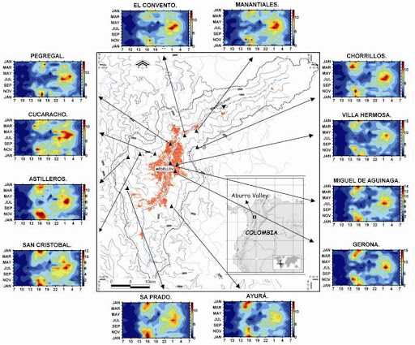

The relationship between rainfall and natural hazards in the Aburrá Valley
https://edieraristizabal.github.io/Potsdam/
Edier Aristizábal
Project supported by:
Alexander von Humboldt Foundation
Georg Forster Research Fellowship for Experienced Researchers
Landslide record & Raingauges

Landslides vs. Rainfall

Landslide records
Rainfall temporal variability
Rainfall spatial variability

Rainfall vs Landslides

Rainfall-Landslide & ENSO

What's next?
- To use meterological radar data available from 2012 to characterize spatial rainfall variability
- To use a landslide inventory using remote sensing
- To carry out PCA analysis to rainfall data and landslide inventory